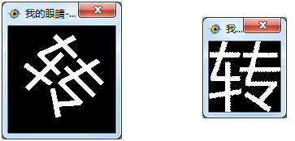

| 命令名称 | Incise_CharRotateCorrect 切割字符旋转纠正 |
| 命令功能 | 对切割的字符像素数据进行旋转纠正处理(使用白点占比最大的方法) |
| 语法格式 | TURING.Incise_CharRotateCorrect(angle, value) |
| 参数说明 |
angle：整数型，旋转的正负度数值（范围：1~90） value：整数型，旋转的度数步进（范围：1~9） |
| 返回值 | 无 |
| 按键精灵 |
复制代码
'获取屏幕图像数据
Call TURING.Pixel_FromScreen(0,0,200,100)
'二值化处理
Call TURING.Filter_Binaryzation("128-255")
'显示获取的图像
Call TURING.Pixel_Preview()
'固定位置切割字符
数量 = TURING.Incise_FixedLocation(6, 4, 7, 11, 13, 4)
'切割字符旋转纠正处理
Call TURING.Incise_CharRotateCorrect(45,1)
'显示切割字符的图像
Call TURING.Incise_Preview(0)
|
| 滤镜效果 |  |